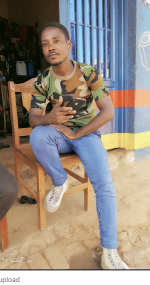NSABIMANA JACQUES
C'est un professionnel de l'habillement qui réalise des vêtements personnalisés, travaillant en sous-traitance pour des maisons decouture, en ateliers de couture
Au sein de son atelier, il effectue toutes ses activités sur une table de coupe. Il prend des mesures, coupe des vêtements, sur toile ou directement dans le tissu, monte, essaie et procède aux retouches et finitions. Il dessine, patronne, coupe, couds, et assure ainsi la conception et la réalisation entière de vêtements (féminins ou masculins). A la fois modéliste, coupeur, mécanicien et conseiller, il sait mettre en valeur la silhouette de ses clients.
Professionnel du sur mesure. Il sait répondre aux attentes du client, établir avec lui une relation de confiance, le mettre en valeur et répondre à ses attentes.
C'est un technicien, qui connaît bien les matières, et possède parfaitement toutes les techniques de couture. Il a une vraie formation technique : coudre, faire un patron, connaître les tissus, etc.
On forme aussi de futurs couturiers à un prix abordable sur une formation de Haute qualité , nous serions ravis de vous aider si intéressé à atteindre vos projets en tant que couturier.  :NSABIMANA JACQUES
:NSABIMANA JACQUES
 ESTHER
ESTHER

 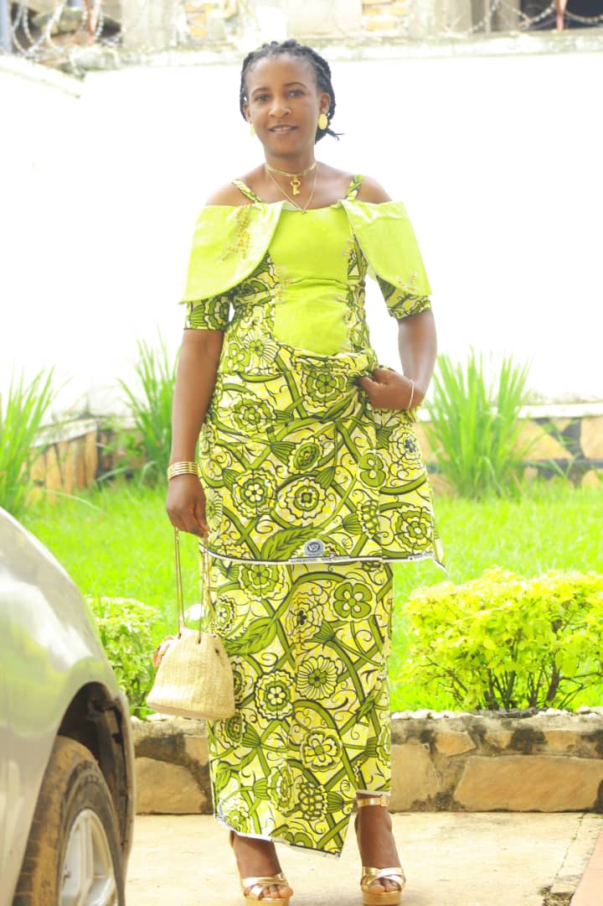
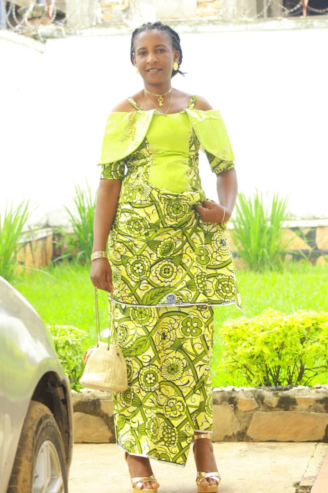 
 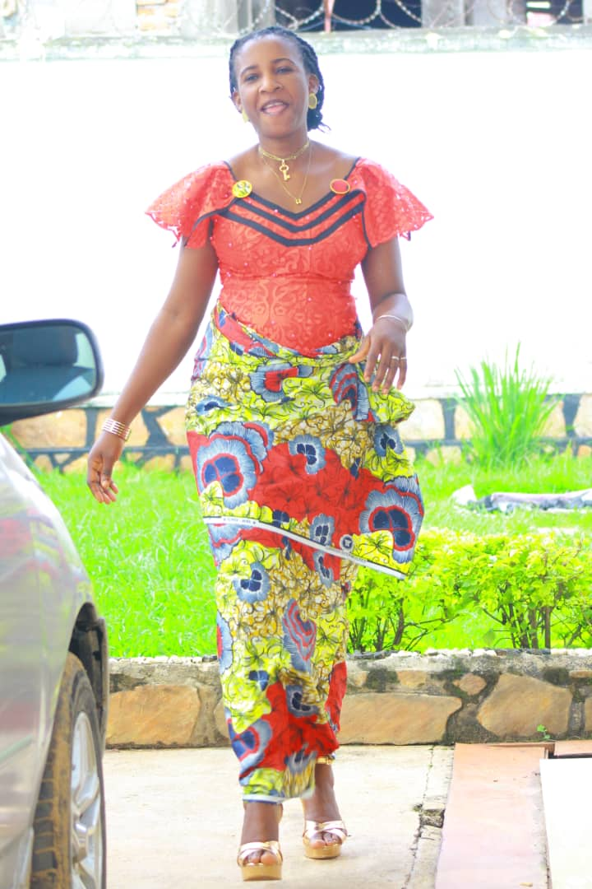 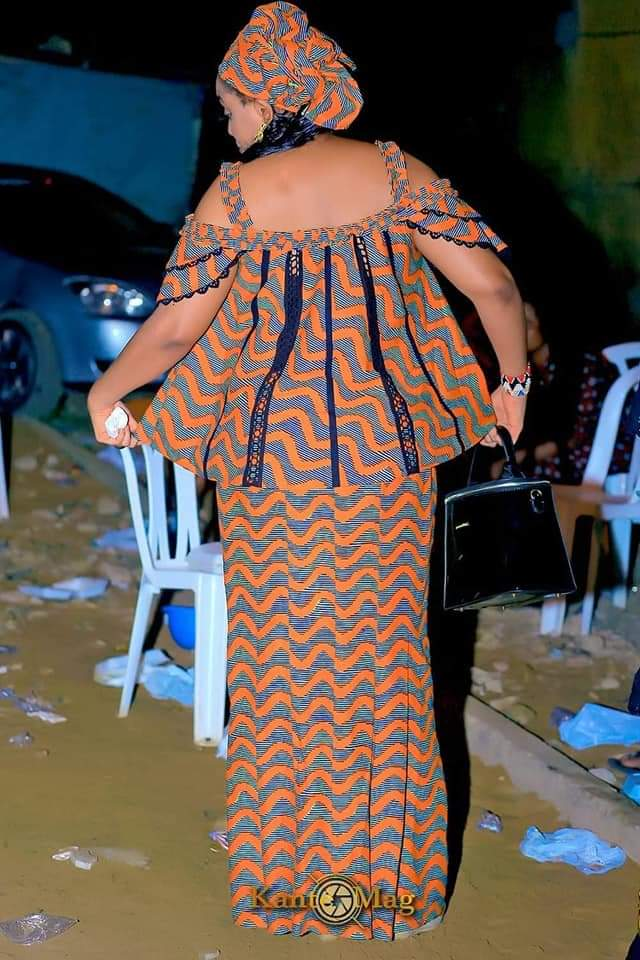 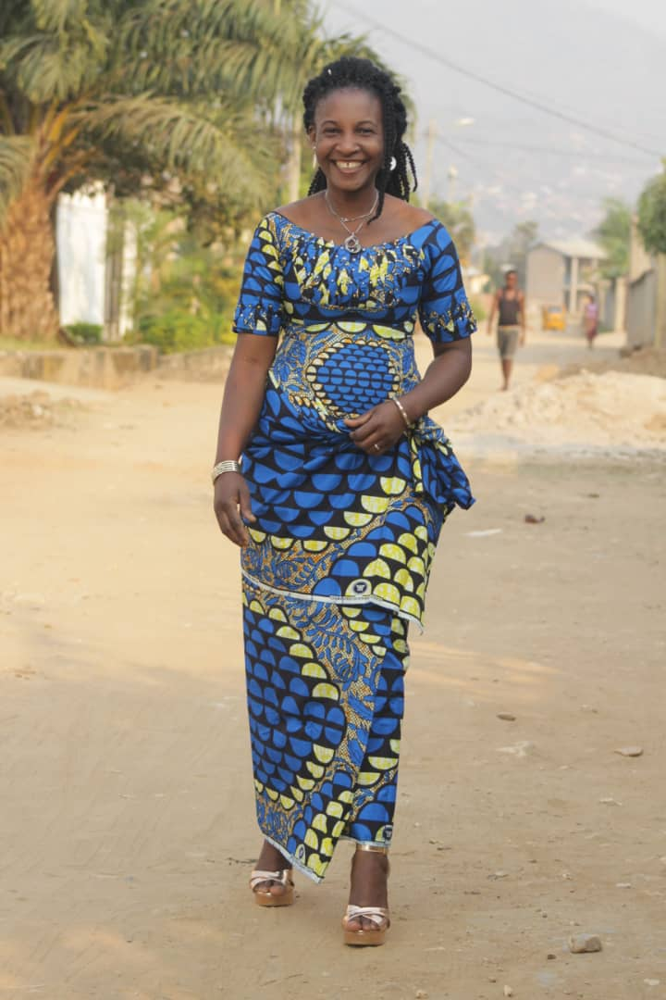 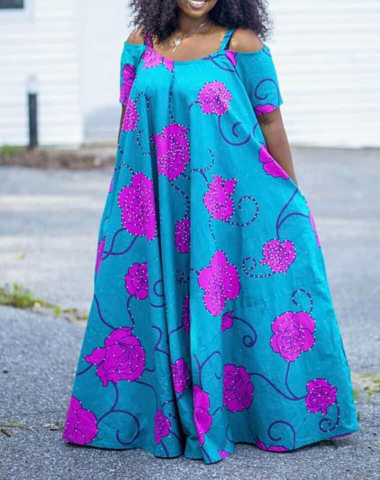 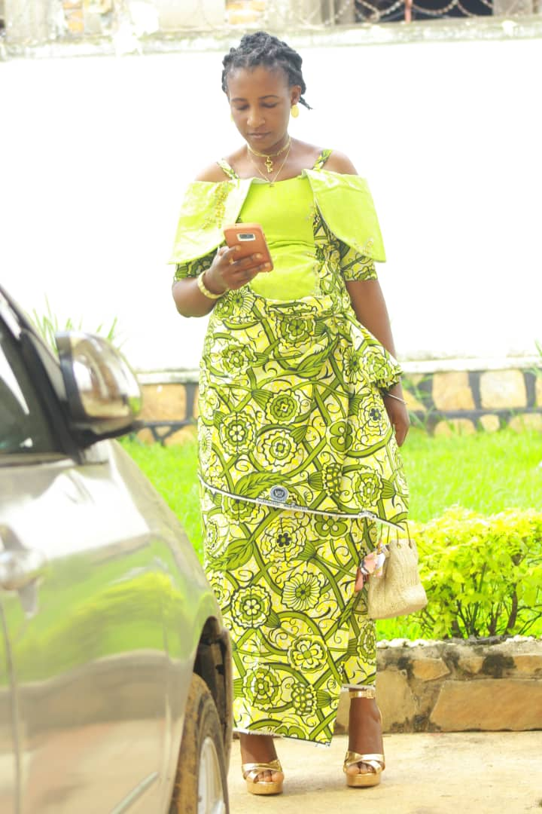
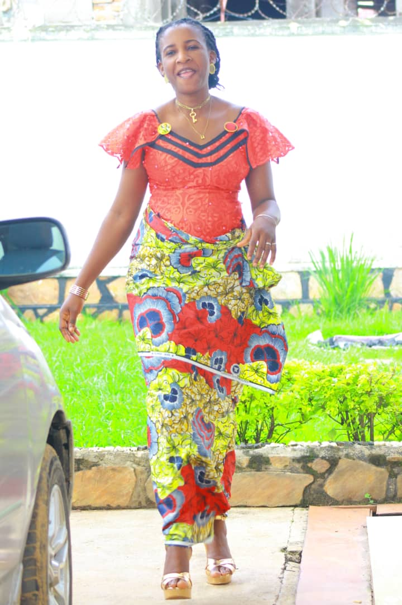 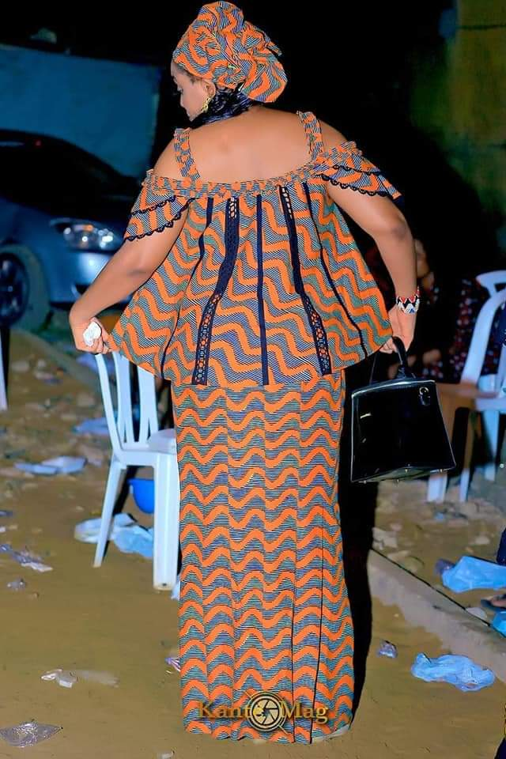 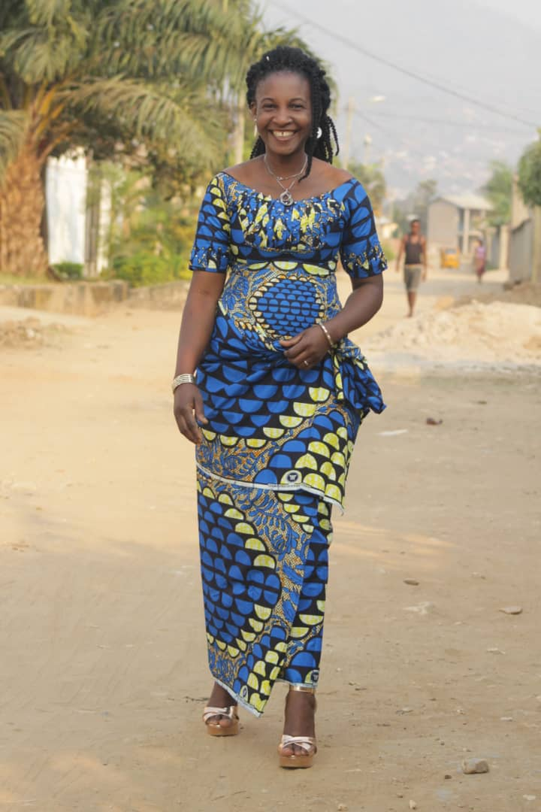 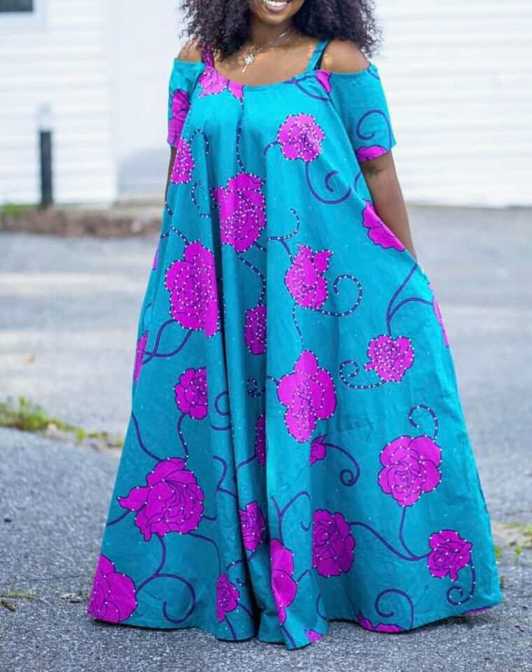 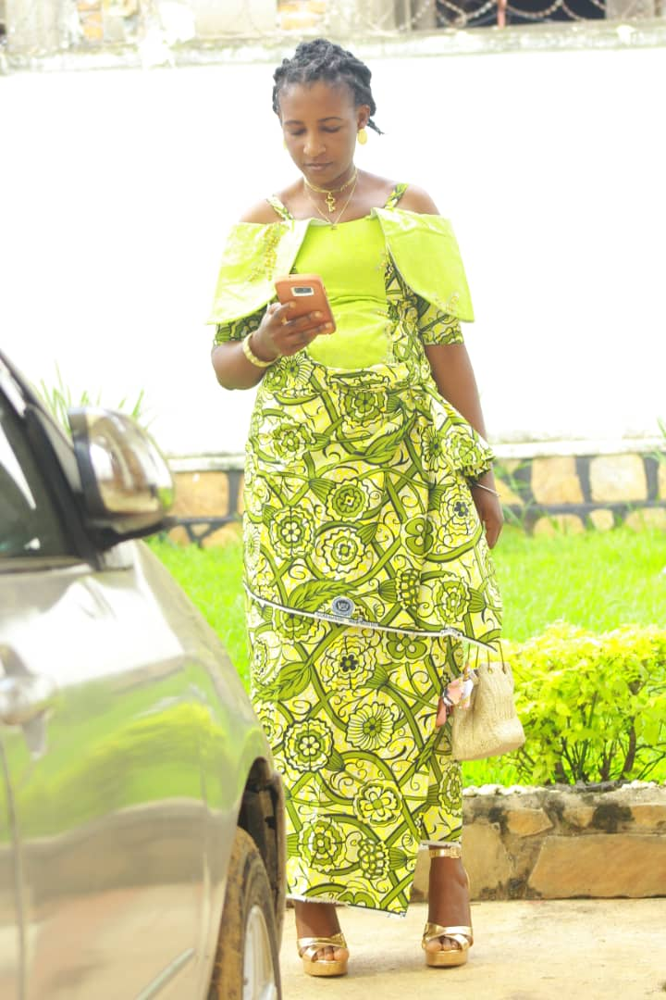
Presentation de quelques modèles réalisables par nos soins .Nous travaillons 7jours/7 de 7h à 21h .L'excellence et la ponctualité dans le travail sont les pionniers de nos devises .
VENTE DES PAGNES
Nous Vendons des pagnes résistants d'origine congolaise qui sont d'une haute qualité ,de texture inémbralable .Venez voir par vous mêmes .
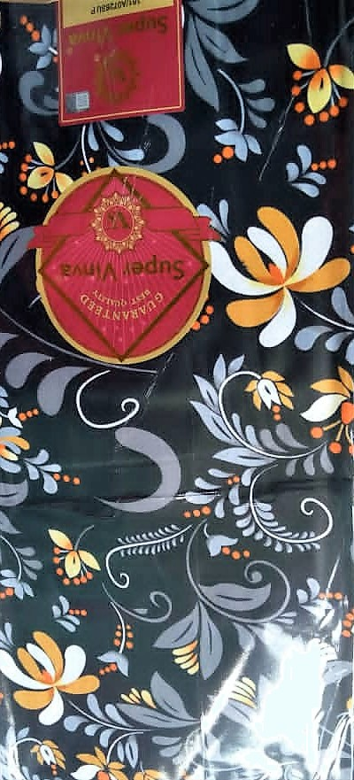 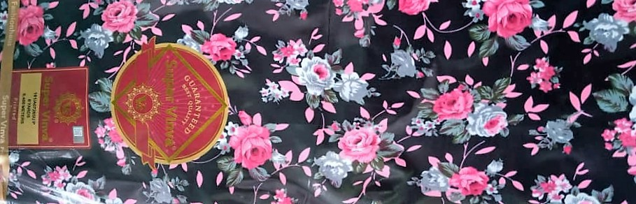 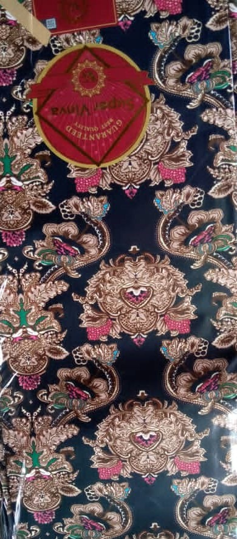  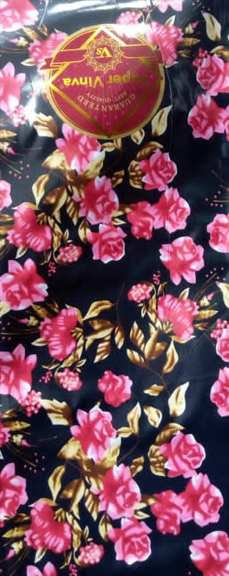 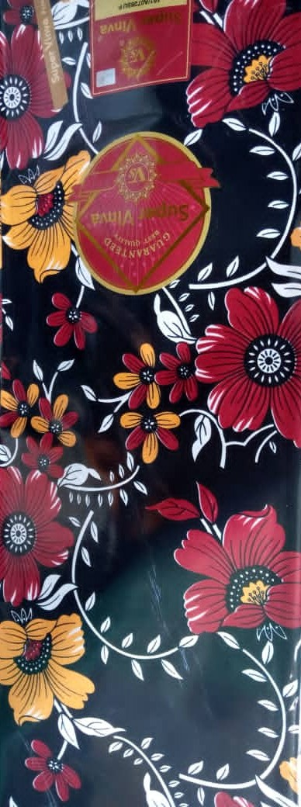
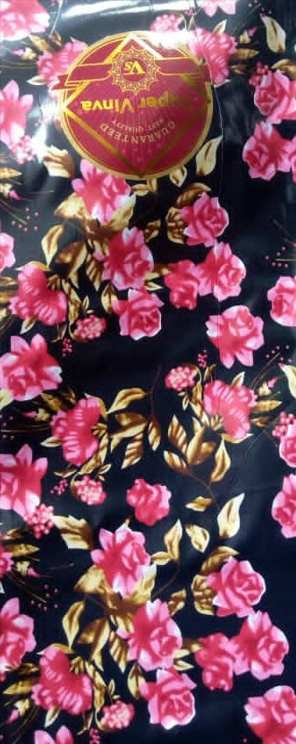 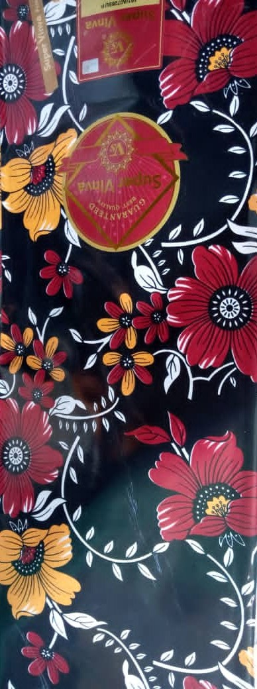
il y en a beaucoup, n'ayez crainte de nous faire une commande. Nous sommes là pour vous servir !